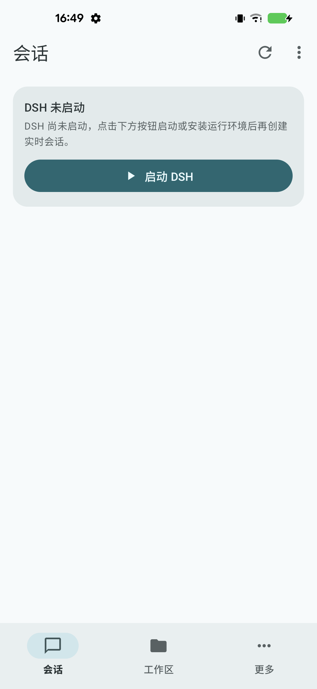
01-chats-stopped
会话页 · DSH 未启动（仅宿主卡；无搜索框/FAB/矛盾空态，启动按钮图标贴文字）
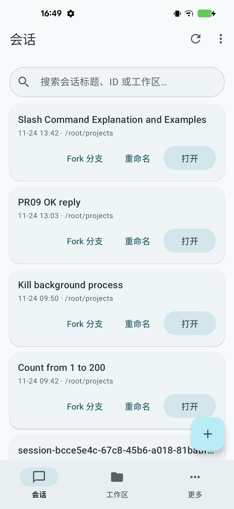
02-chats-ready
会话页 · 就绪（新胶囊搜索框 + 历史会话 + FAB 仅在就绪时显示）
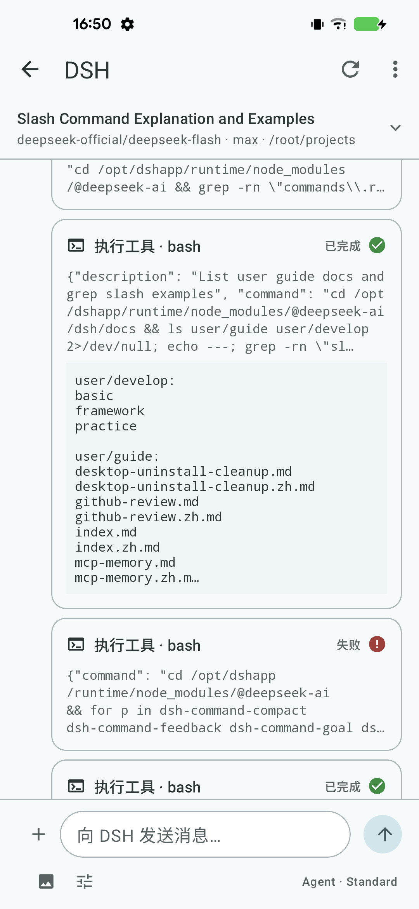
04-chat-tool-expanded
原生会话 · 点参数字体即展开（JSON + 输出，折叠/展开可逆）
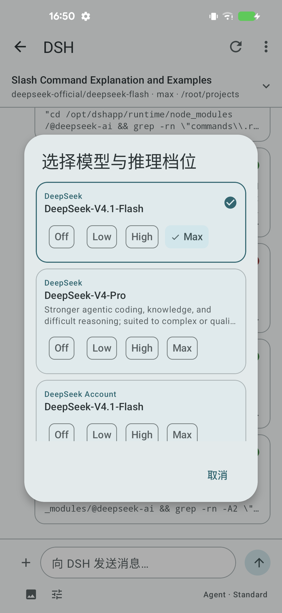
05-model-picker
模型与推理档位弹窗 · Filter Chip 高亮（Max 选中：勾选图标 + 容器填充 + 卡片主色描边，四档同行）
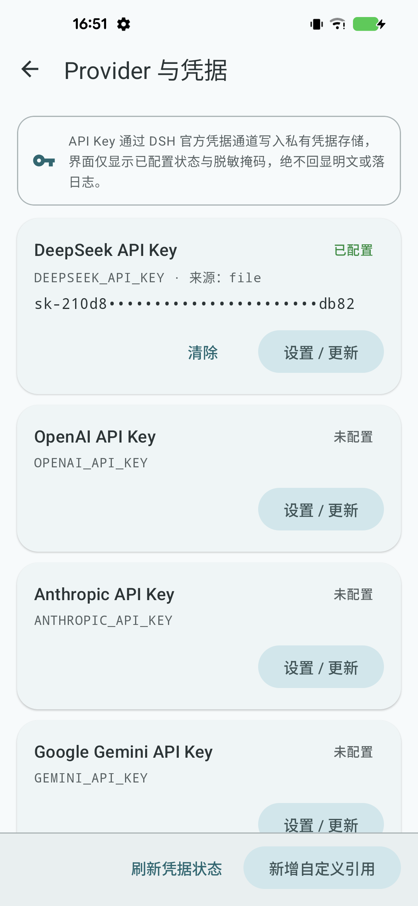
06-credentials-refresh-label
模型与凭据配置 · 底部按钮文案（刷新凭据状态）
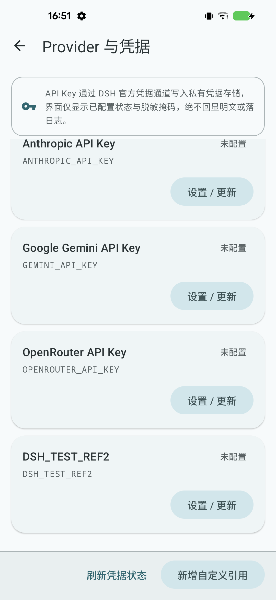
07-credentials-bottom
模型与凭据配置 · 滚到底（固定操作栏 + 分隔线，自定义引用可见）
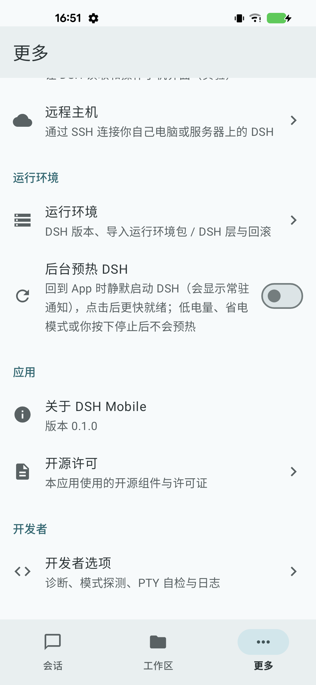
09-more-scrolled-appbar
更多 · 滚动后（liftOnScroll 抬升色调，标题区不再透出正文残影）
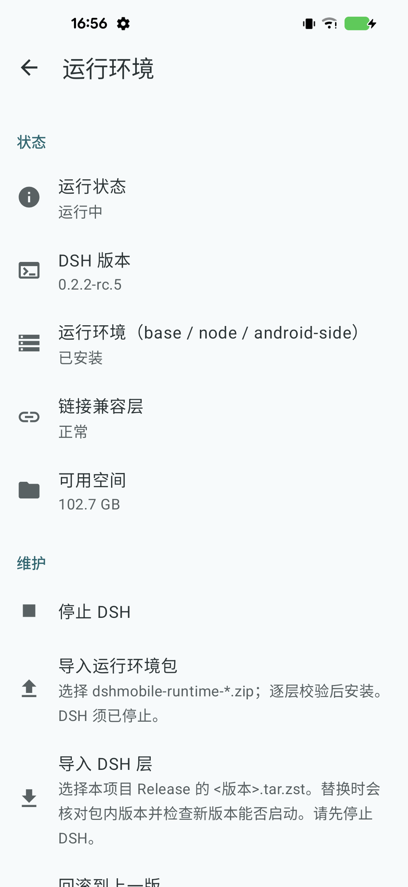
13-runtime-shared-list-appbar
运行环境（与更多共用 fragment_list 新 AppBarLayout，回归）
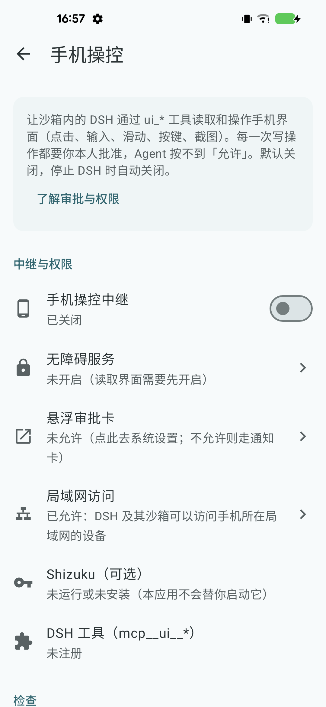
14-automation-shared-list-appbar
手机操控（共用 fragment_list 新 AppBarLayout，回归）
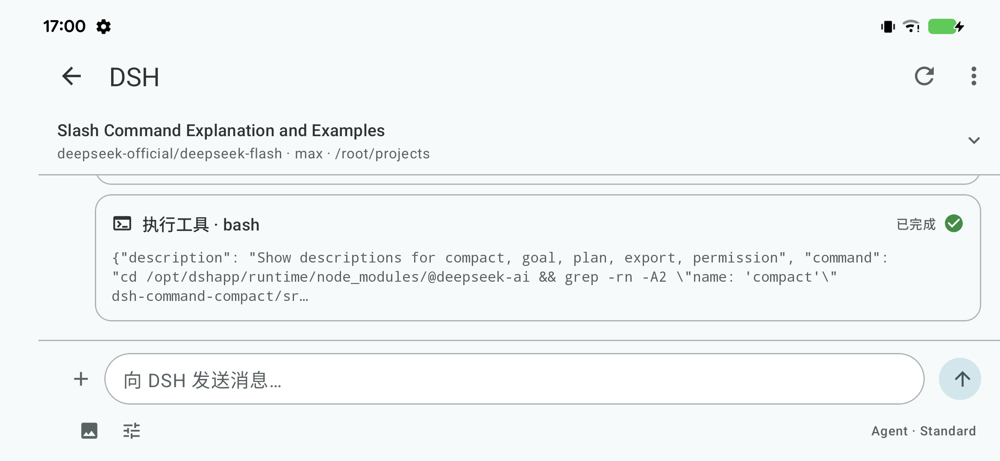
15-landscape-chat-compact
横屏 · 会话页（双方均可见：会话头分隔线 + 输入区上方分隔线）
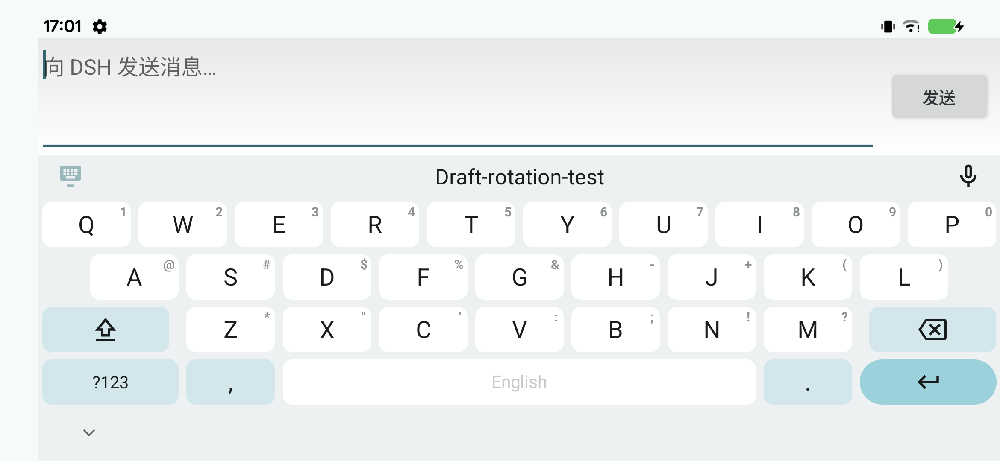
16-landscape-ime-compact
横屏 + 输入法（compact：会话头与其分隔线隐藏，输入区上方分隔线保留——重复 ID 修复的真机证据）